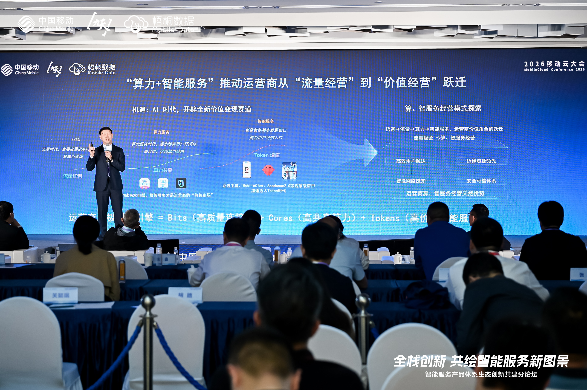
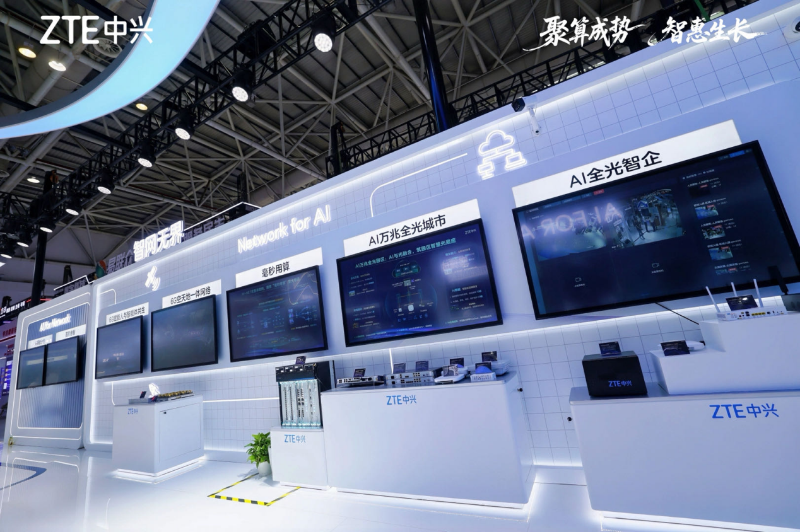

XHALO CARRIER NETWORKS
面向运营商的连接、算力与智能网络伙伴
兴火通讯聚焦无线接入、核心网、光网络、数据网络、算力基础设施与绿色能源， 为运营商构建高可靠、低时延、可演进的数字基础设施。
企业定位
连接千行百业，支撑下一代运营商网络演进
从 5G-A 无线网络到算力边缘节点，从承载网到 AI 运维平台，兴火通讯以模块化产品和场景化方案， 帮助运营商提升网络体验、建设绿色基础设施，并快速响应行业专网需求。
CARRIER-GRADE INFRASTRUCTURE
以云网融合承载下一代数字业务
兴火通讯围绕运营商网络演进需求，提供高带宽传输、低时延边缘、弹性算力和可观测运维能力， 支撑高清视频、行业专网、AI 终端和云网融合等新型业务。
核心业务
运营商级产品矩阵
无线接入
面向宏站、室分、专网与 5G-A 演进的高能效无线接入能力。
核心网
云原生核心网、网络切片和低时延业务控制，支撑灵活业务编排。
光网络
面向骨干、城域与园区场景的高速光传输与全光接入能力。
数据网络
构建安全、弹性、可观测的 IP 承载与云网互联基础。
算力基础设施
边缘算力节点、智能调度与算网协同，服务低时延行业应用。
数字能源
站点能源、数据中心能源与智能节能策略，降低全网碳排成本。
成交案例
面向全球场景的数据中心交付实践
以预制装配式、总包集成、智能运维和快速上线能力为核心，兴火通讯支撑运营商、 政务与企业客户完成多类型数据中心建设。
预制装配式堆叠集装箱数据中心
首次大规模落地预制装配式堆叠集装箱数据中心，在复杂外部环境下 60 天完成现场集成部署并快速上线业务。
总包集成快速部署
土建与机电并行推进，显著减少现场工程量，整体交付周期缩短 50%。
数字业务快速上线
以极致服务响应客户上线节奏，超预期完成交付，支撑数字业务快速投入运营。
国家级数据中心建设
8 个月完成国家级数据中心建设，项目通过 Uptime Tier III 设计和建造双认证。
电子政务核心数据中心
为各级政务部门提供稳定可靠的数据中心基础服务，支撑电子政务持续运行。
国家安全网数据中心
采用统一运维管理平台，对全设施进行实时监控和智能管理，实现极简运维。
集装箱数据中心
为客户未来 IT 系统虚拟化改造奠定基础，提升数据中心建设弹性。
灵活布局数据中心
机柜容量和尺寸均可升级，满足业务规模变化下的快速扩容需求。
集装箱 DC 项目
以模块化数据中心能力支撑客户建设需求，提升工程部署确定性。